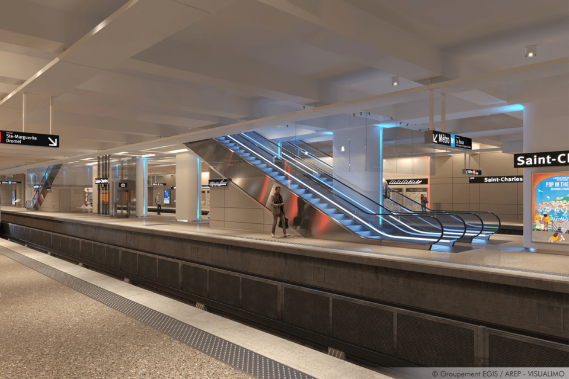

Fin des Travaux de la ligne M2 :
Depuis presque trois semaines, le quai de la ligne du métro M2 à la station Saint-Charles à Marseille était fermé à cause de travaux. Plus la peine de faire de changements lorsque vous empruntez la ligne de métro M2 et que vous souhaitez vous rendre à la station Saint-Charles. Ce lundi 7 novembre, le quai – « entièrement rénové et modernisé » précise la Métropole d’Aix-Marseille-Provence – a rouvert. Pour rappel, les travaux de rénovation à la station Saint-Charles ont débuté en septembre 2020. « La surface au sol a été agrandie pour des quais plus spacieux et confortables, avec de nouvelles infrastructures d’accès aux quais », informe toujours la Métropole. Escalators entre la gare et le métro bientôt en travaux : Espace, confort, escaliers mécaniques, portes palières… Ces travaux de rénovation devraient prendre fin en 2023, « avec la mise en service des 4 ascenseurs et la rénovations des escalators mécaniques entre la station et la gare SNCF ». Un chantier qui permettra entièrement l’accès à la gare aux personnes à mobilité réduite avance la collectivité.
La première académie du métavers :
C'est la première académie du métavers en France, et elle ouvrira prochainement ses portes à Marseille. Formation, emplois… En quoi consiste exactement cette école ? L’ouverture officielle est prévue le 5 décembre 2022. Facebook, Instagram, WhatsApp et Messenger ont décidé d’ouvrir (en partenariat avec Simplon.co) dans les quartiers nord de Marseille la toute première école gratuite et inclusive entièrement dédiée au métavers. De quoi s’agit-il exactement ? Des métiers liés au métavers : Cette nouvelle académie a pour objectif de créer des emplois et de former ceux qui souhaitent exercer un métier lié au métavers. L’apprentissage se fait en plusieurs phases. Il y aura d’abord une session de formation intensive individuelle de 3 à 4 mois. Celle-ci sera ensuite suivie d’une alternance de 15 à 16 mois au sein d’entreprises locales partenaires de l’école. L’académie a d’ores et déjà affirmé qu’une dizaine d’entreprises se sont déjà engagées à recruter un alternant à l’issue du programme de formation. Parmi elles : Wixar, Abim, et Cross the age. En quoi consiste exactement la formation ? Elle sera dédiée à l’apprentissage du métier de « concepteur développeur spécialisé en technologies immersives (réalité virtuelle, augmentée et mixe) et métavers ». Qu'est-ce que le métavers ? Le métavers, c'est la contraction de "méta" et "univers", soit un monde virtuel. Dans celui-ci les personnes pourront échanger entre elles via des avatars. Il sera aussi possible de réaliser des transactions à l'aide des jetons non fongibles (NFT), des cryptomonnaies... Le tout se fera à travers différents moyens technologiques comme la modélisation 3D, la réalité virtuelle, la réalité augmentée, l'intelligence artificielle...
L'OM au bord de la crise :
L'Olympique de Marseille ne verra pas les huitièmes de finale de la Ligue des champions. Le club phocéen a perdu face à Tottenham ce mardi 1er novembre au stade Vélodrome. « Une erreur qui fait mal » Comment l’OM a-t-il pu laisser échapper la qualification pour la Ligue Europa que son match nul contre Tottenham lui offrait ? Les Marseillais avaient en mains ce qui n’est certes qu’un lot de consolation, mais qui ouvrait de nouvelles perspectives européennes en février. En se jetant à l’assaut sans aucune maîtrise dans le temps additionnel, ils ont au contraire permis à Tottenham de marquer en contre à la 95e minute et se retrouvent sans rien. Pourquoi les joueurs cadres n’ont-ils pas appelé au calme ? Savaient-ils que la victoire de Francfort contre le Sporting Portugal dans l’autre match leur garantissait alors la C3 ? Pourquoi Tudor n’a-t-il pas demandé à ses joueurs de se contenter de ce qu’ils avaient ? Résultat catastrophique pour Guendouzi « C’est un manque de communication flagrant », a reconnu Harit. « On ne va pas se tirer les uns sur les autres, mais… Vous dire que je ne suis pas dégouté que l’info ne soit pas remontée jusqu’à nous, ce serait mentir. » Même discours chez Matteo Guendouzi, qui a parlé de « résultat catastrophique ». « Si on avait su que Francfort gagnait, on ne serait pas parti à l’abordage, on aurait au moins gardé notre ligne défensive. Il y a eu une incompréhension et des erreurs de la part de tous. Il va falloir assumer », a-t-il tranché. Tudor s’est lui réfugié derrière « le bruit », sans vraiment convaincre. « Ça n’a pas permis de bien expliquer aux garçons. Ils voulaient marquer », a dit l’entraîneur marseillais.